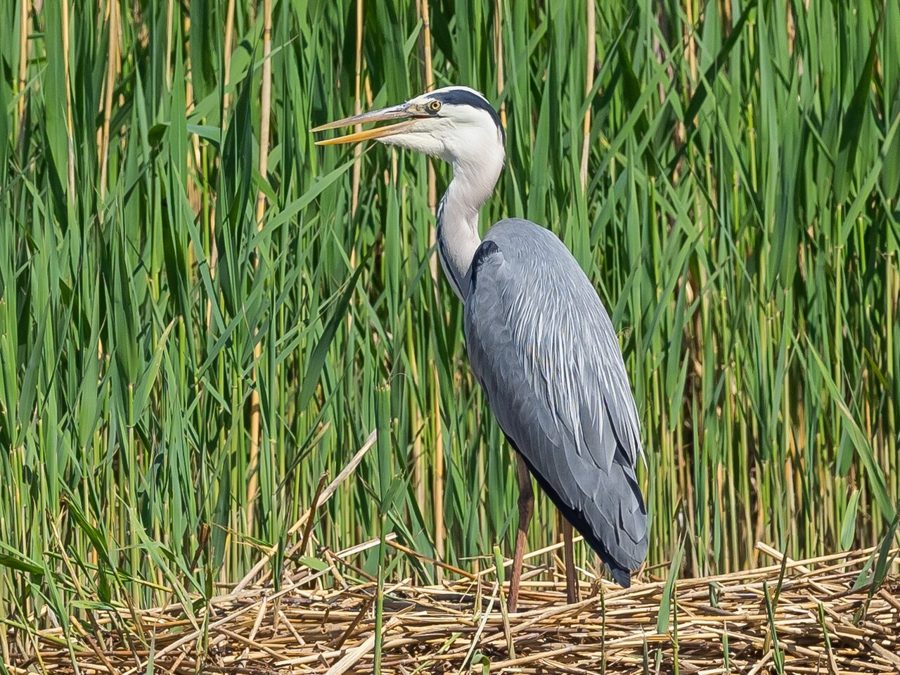

ग्रे बगुलाGrey Heron
Ardea cinerea · Ardeidae · BRD-0054

- Scientific name
- Ardea cinerea Linnaeus, 1758
- Family
- Ardeidae
- Hindi
- ग्रे बगुला
- Status here
- native
- IUCN
- LC
When to look कब देखें
Present all year.
ग्रे बगुला / Grey Heron
Ardea cinerea Linnaeus, 1758 — Ardeidae
ग्रे बगुला — पूर्वी उत्तर प्रदेश के जलाशयों, नदियों और धान के खेतों में पाया जाने वाला सबसे लंबा और सबसे आम बगुला (heron) है। इसकी पीठ का हिस्सा स्लेटी-धूसर (grey above), छाती और पेट सफ़ेद होते हैं, तथा इसकी आँखों के ऊपर से एक काली पट्टी (black supercilium) निकलकर सिर के पीछे एक सुंदर काली कलगी बनाती है। यह शिकार करने की अपनी 'धैर्यपूर्ण प्रतीक्षा' (still hunter) शैली के लिए जाना जाता है; यह उथले पानी में बिना हिले-डुले घंटों खड़ा रहता है और जैसे ही कोई मछली या मेंढक पास आता है, यह बिजली की गति से अपनी कटार जैसी नुकीली चोंच (dagger-like bill) से उस पर प्रहार करता है। उड़ते समय यह अपने लंबे गले को अंग्रेजी के 'S' अक्षर के आकार में पीछे की ओर खींच लेता है और इसके बड़े पंख धीमी गति से फड़फड़ाते हैं। उड़ान के दौरान इसकी तीखी और कर्कश आवाज "फ्रैंक" (harsh "fraank" call) को आसानी से पहचाना जा सकता है।
Quick Identification त्वरित पहचान
| Feature | Description |
|---|---|
| Size | Very tall wading bird (90–100 cm total length); wingspan around 155–175 cm |
| Colouration | Ash-grey upperparts; white head and neck with black streaks down the foreneck; white underparts |
| Head Pattern | Black stripe runs from the eye to the back of the head, ending in a long black crest |
| Bare Parts | Bill is yellowish-horn, turning brighter orange-yellow when breeding; legs are greenish-brown |
| Flight | Heavy, slow wingbeats; neck pulled back into a tight 'S'-shape; legs extend far behind the tail |
| Hunting | Stands completely motionless in shallow water or stalks very slowly |
Field tip: Look along the margins of large ponds or rivers. Watch for a tall, grey-and-white bird standing perfectly still in shallow water. If it flies, listen for a loud, harsh, croaking "fraank" call. The female resembles the male and is shown in the field tip.
Morphology आकारिकी
Biometrics (typical measurements in the northern Indian plains):
| Measurement | Range |
|---|---|
| Total length | 900–1000 mm |
| Wing (flattened chord) | 430–480 mm |
| Tail | 160–185 mm |
| Tarsus | 135–160 mm |
| Bill (culmen from base) | 110–125 mm |
| Weight | 1000–2000 g |
Plumage: The forehead and crown are white, bordered by the black superciliary stripe which merges into the long, thin black crest feathers. The long neck is white, marked with two parallel rows of blackish spots down the front. The mantle and wings are uniform bluish-grey, with black primary feathers. The breast has elongated white feathers that hang down over the breast. The belly and flanks are white, with some black patches on the lower sides.
Bare parts: The long, dagger-like bill is greenish-horn, turning yellow or orange-yellow in the breeding season. The irises are bright golden-yellow. The legs and unfeathered tarsi are greenish-brown, sometimes turning reddish during courtship.
Vocalisations
Grey Herons are generally quiet but vocal in flight and near nesting colonies.
- Flight call: A loud, extremely harsh, croaking fraank or krraak, uttered at intervals, which can be heard from a great distance.
- Alarm call: A rapid, guttural chatter, gack-gack-gack, produced when flushed or when crows attempt to steal food near its perch.
Behaviour & Ecology व्यवहार और पारिस्थितिकी
- Hunting style: A classic "still hunter." It stands motionless in water, with its neck bent, ready to strike. It also uses a very slow, deliberate walking hunt (stalking), lifting each foot carefully to avoid making ripples.
- Wading depth: Its long legs allow it to wade in water up to 30 cm deep, which is deeper than Cattle Egrets or Pond Herons can reach.
- Nesting association: Often nests in colonies (heronries) alongside other waterbirds, sharing tall trees near water bodies.
Life Cycle / Phenology जीवन चक्र
- Breeding season: March to July in northern India, often starting before the monsoon.
- Nesting: Builds a large, flat platform nest of sticks and reeds, which is reused and expanded over multiple years.
- Nest site: Placed high up in mature trees near water, such as Peepal (Ficus religiosa), Banyan (Ficus benghalensis), or Arjun (Terminalia arjuna).
- Clutch size: 3 to 4 pale greenish-blue eggs.
- Incubation: 25–28 days, shared by both parents.
- Fledging: Both parents regurgitate food to feed the chicks. The young fledge in about 50–55 days and remain near the nesting trees for several weeks.
Host Plants or Prey आहार
Primary food items:
- Fish: A wide range of freshwater fish, including carps, murrels, and catfishes.
- Amphibians & Reptiles: Grass frogs (Fejervarya limnocharis), water snakes (Xenochrophis piscator), and garden lizards.
- Insects: Large aquatic beetles, dragonfly nymphs, and grasshoppers.
- Crustaceans: Jacquemont's Field Crabs (Paratelphusa jacquemontii) and freshwater grass shrimp.
Predators / Natural Enemies शत्रु
- Raptors: Large eagles (like the Greater Spotted Eagle) and marsh harriers may prey on young or nesting herons.
- Corvids: House Crows (Corvus splendens) systematically target nesting colonies to steal eggs and small chicks.
- Reptiles: Bengal Monitors (Varanus bengalensis) climb nesting trees to feed on eggs.
Agricultural / Human Relevance कृषि प्रासंगिकता
Wetland indicator. The presence of Grey Herons is a good indicator of healthy, fish-abundant freshwater wetlands. They also help control rodent populations in flooded fields.
Conservation and legal status: Protected under Schedule IV of the Wildlife Protection Act, 1972. They are threatened by the destruction of large nesting trees near wetlands, drainage of marshes for agriculture, and pesticide accumulation in the aquatic food chain (biomagnification).
Expected Locally स्थानीय रूप से अपेक्षित
Not a field record. Written from published accounts for eastern Uttar Pradesh. No confirmed local sighting yet — if you have seen it, that is what the atlas needs.
अभी तक स्थानीय पुष्टि नहीं। यह विवरण प्रकाशित स्रोतों से है, किसी अवलोकन से नहीं।
A common resident throughout the Basti district, regularly spotted along the Rapti and Ghaghra riverbeds, and near larger village ponds (talab) in the Harraiya and Basti blocks. They are frequently seen standing singly in shallow water margins or perched on tall trees bordering village wetlands.
Distribution वितरण
Global range: Widespread across Europe, Asia, and parts of Africa. Northern populations are migratory, wintering in tropical zones.
In India: Found throughout the plains and foothills, wherever suitable water bodies exist.
In Uttar Pradesh: A common resident state-wide in all riverine and wetland districts.
In Basti district / eastern UP: Regularly recorded year-round in marshy floodplains and lakes across all blocks.
Research Questions शोध प्रश्न
Anyone can investigate these | कोई भी इन प्रश्नों की जाँच कर सकता है
- How many seconds does a Grey Heron remain motionless before attempting a strike on a fish? — Measure and record still-hunting durations in local ponds.
- What is the nesting tree species preference of Grey Herons in Basti district? / बस्ती जिले में ग्रे बगुला घोंसला बनाने के लिए किस पेड़ की प्रजाति को सबसे अधिक प्राथमिकता देता है? — Survey and catalog active heronry trees.
- Does the hunting success rate of Grey Herons differ between flooded paddy fields and open river margins? — Compare strike-to-capture ratios in different habitats.
- How do Grey Herons and Purple Herons interact when hunting in the same pond stretch? / एक ही तालाब के किनारे शिकार करते समय ग्रे बगुला और बैंगनी बगुला के बीच क्या व्यवहार देखा जाता है? — Document interspecific territorial displays.
- Does the count of Grey Herons in Basti increase during the winter months compared to the summer? — Conduct seasonal point counts to track migratory influx.
Similar Species मिलती-जुलती प्रजातियाँ
| Species | Key Difference | हिंदी |
|---|---|---|
| Purple Heron (Ardea purpurea) | Slenderer; dark reddish-chestnut and grey plumage; black-and-rufous striped neck; prefers hiding in dense reeds | बैंगनी बगुला — अधिक पतला, कत्थई-लाल शरीर, नरकटों में छिपना |
| Cattle Egret (Bubulcus ibis) | Much smaller (48–53 cm); entirely white plumage (with buff feathers when breeding); short bill; follows cattle | गाय बगुला — बहुत छोटा, सफ़ेद रंग, खेतों में घूमना |
| Indian Pond Heron (Ardeola grayii) | Much smaller; brown back (white in flight); sits hunched near mud margins | अंधा बगुला — बहुत छोटा, उड़ते समय सफ़ेद दिखना |
Field rule: Very tall grey-and-white wading bird with a black superciliary crest and a yellow dagger-like bill, standing motionless in shallow water, is a Grey Heron.
Taxonomy & Classification वर्गीकरण
Original description. Carl Linnaeus described the Grey Heron as Ardea cinerea in 1758 in his Systema Naturae (ed. 10, vol. 1, p. 95). The type locality was Sweden. The genus name Ardea is Latin for a heron. The specific name cinerea is Latin for ash-grey, referring to the bird's primary colouration.
Subspecies. Four subspecies are recognized globally. The nominate subspecies resident and wintering in UP is:
| Subspecies | Authority | Range | Notes |
|---|---|---|---|
| A. c. cinerea | Linnaeus, 1758 | Europe, Africa, and Western Asia to India | UP subspecies; nominate form; larger and paler than the eastern subspecies A. c. jouyi |
Family and order placement. Placed in the order Pelecaniformes, family Ardeidae, subfamily Ardeinae (herons and egrets).
Phylogenetic notes. Genetic studies place the genus Ardea as a monophyletic group, closely related to the genus Egretta.
IUCN status rationale. Listed as Least Concern (LC) due to its extremely large range and stable global population, despite localized declines from wetland degradation.
Photo Gallery फोटो गैलरी
References संदर्भ
- Linnaeus, C. (1758). Systema Naturae. Tenth Edition. Holmiae, p. 95. [original description]
- Ali, S. & Ripley, S. D. (1999). Handbook of the Birds of India and Pakistan. Vol. 1. Oxford University Press, New Delhi.
- Grimmett, R., Inskipp, C. & Inskipp, T. (2011). Birds of the Indian Subcontinent. 2nd ed. Christopher Helm, London.
- Hancock, J. & Kushlan, J. (1984). The Herons Handbook. Croom Helm, London.
- BirdLife International (2024). Ardea cinerea. IUCN Red List of Threatened Species. Ver. 2024.
- GBIF Occurrence Data — Ardea cinerea, Uttar Pradesh (2010–2025).
Source file: species/fauna/birds/grey_heron.md